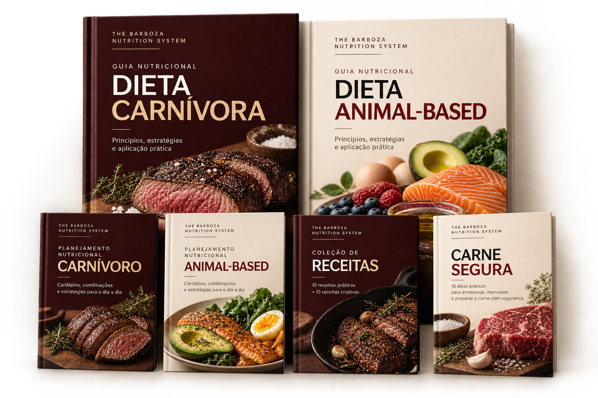
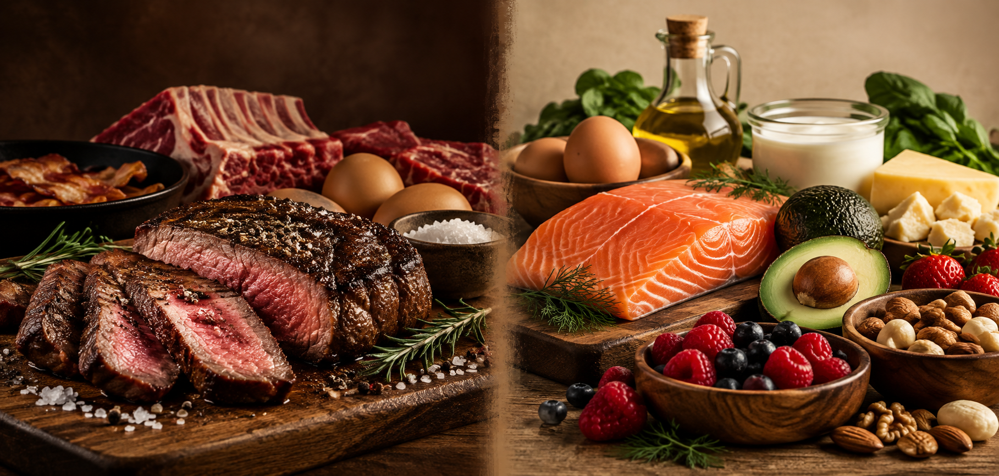

DIETA CARNÍVORA
Uma estrutura mais restritiva.
Baseada exclusivamente em alimentos de origem animal, concentrando a alimentação em carnes, ovos, peixes e gorduras animais.
CarnesOvosPeixesGorduras animais
THE BARBOZA METHOD • NUTRIÇÃO
CARNÍVORA + ANIMAL-BASED
Dois caminhos nutricionais reunidos em um sistema de guias, planejamentos, cardápios e receitas para transformar informação em uma alimentação mais organizada e prática.
QUERO ACESSAR O NUTRITION SYSTEM →Material digital • PDFs • Pagamento único

NÃO É APENAS UMA DIETA
A alimentação Carnívora e a Animal-Based partem de uma forte presença de alimentos de origem animal, mas não são a mesma estratégia. O Nutrition System reúne os dois caminhos para você compreender suas diferenças e ter recursos práticos para organizar sua alimentação.
DOIS CAMINHOS

DIETA CARNÍVORA
Baseada exclusivamente em alimentos de origem animal, concentrando a alimentação em carnes, ovos, peixes e gorduras animais.
DIETA ANIMAL-BASED
Mantém os alimentos de origem animal como base e incorpora frutas, oleaginosas e laticínios simples quando tolerados.
O SISTEMA COMPLETO
Materiais complementares para entender os protocolos, planejar refeições e levar as escolhas para a cozinha.
Fundamentos da abordagem, alimentos utilizados, adaptação, aplicações práticas e pontos de atenção.
Cardápios estruturados, combinações de refeições e referências práticas para organizar o dia alimentar.
Fundamentos de uma abordagem mais flexível, com proteínas animais como base e inclusão planejada de outros alimentos.
Exemplos de refeições, diferentes estruturas de cardápio e orientações para ajustar a alimentação à rotina.
Preparações carnívoras e Animal-Based para cafés da manhã, refeições, lanches e opções doces.
Orientações práticas para compra, armazenamento, descongelamento, preparo e conservação de carnes e frutos do mar.
DA TEORIA PARA A COZINHA
Por isso o sistema não termina na explicação dos protocolos. Você também recebe planejamentos, exemplos de refeições e coleções de receitas para visualizar como cada abordagem pode funcionar no dia a dia.
RESPONSABILIDADE PROFISSIONAL
Os materiais nutricionais do sistema são assinados por Anna Clara Barboza, nutricionista CRN 23102300. O conteúdo reúne orientações, exemplos e pontos de atenção para apresentar os protocolos com contexto e responsabilidade.
PARA QUEM É
✓ Quer conhecer as diferenças entre Carnívora e Animal-Based.
✓ Busca exemplos práticos de organização das refeições.
✓ Quer sair da teoria e ter cardápios e receitas como referência.
✓ Valoriza um material organizado e assinado por profissional de Nutrição.
THE BARBOZA NUTRITION SYSTEM
PERGUNTAS FREQUENTES
Não. O The Barboza Nutrition System é um produto digital independente dos cursos de luta do The Barboza Method.
Não. Os materiais têm finalidade educacional e informativa. Necessidades de energia, macronutrientes e alimentos devem ser individualizadas conforme saúde, rotina, treinamento e objetivos.
Não. O sistema apresenta dois caminhos diferentes para que você compreenda como cada abordagem é estruturada. A escolha e os ajustes devem considerar suas necessidades individuais e, quando indicado, acompanhamento profissional.
O produto é digital. Após a confirmação da compra, o acesso é liberado pela plataforma Hotmart.
Sim. É uma abordagem altamente restritiva e o próprio material destaca que a evidência sobre benefícios de longo prazo é limitada. Acompanhamento profissional é recomendado para avaliar adequação e monitoramento individual.
CARNÍVORA + ANIMAL-BASED